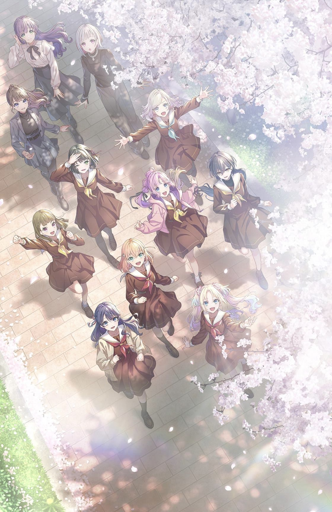

关于蓮ノ空About Hasunosora
石川县金泽市的偏远地区，私立莲之空女学院坐落于盛开着莲花的湖畔。
在这所创立了100余年的高中，自古以来流传的传统仍在延续。
什么一成不变，什么正在改变。
什么正在启程，什么将被留下。
6位/9位/8位少女在其中度过着闪闪发光的青春。
在有限的时间里，尽全力地绽放。
这就是，她们的「大家一起实现梦想的故事」——
本站以《Link! Like! Love Live!》活动记录 46 篇剧情为蓝本，
介绍这所学园的角色、故事与音乐。
「みんなの笑顔をいーっぱい花咲かせちゃいましょう！」
「让大家的笑容全部绽放吧！」—— 日野下花帆（103期 第1話）

12人の桜見上げビジュアル · images/about-campus.jpg